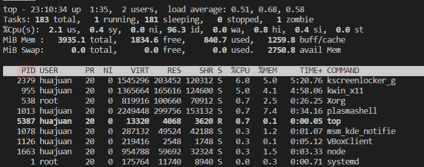

Linux开发环境基础知识¶
| 学习建议 ：《鸟哥的Linux私房菜（基础学习篇）》 |
1. 如何登陆Linux¶
Linux登录方式主要有两种：
- 本地登录：只要启动虚拟机即可，类似于打开自己电脑直接连接显示器的方式；可以通过
Ctrl + Alt + F[1-6]在6个虚拟控制台之间进行切换。需要注意的是，远程实验平台不能用本地登录。 - 远程登录：对于Windows用户来说，可以通过MobaXterm、Windows Terminal、putty等工具远程登录。
2. shell简介¶
Shell意思为命令行界面，是运行命令行的应用程序，它本身是一个用C语言编写的程序。shell是用户使用Linux的桥梁，用户通过shell来控制Linux系统，Linux系统通过shell展示系统信息。
常见的shell有：bash、sh、csh、ksh等，可以在创建用户时指定用户的登录shell，也可以输入shell名称打开一个新的shell。
openEuler用户的默认登录shell是bash。
系统提示符默认表示的是：[当前登录用户@主机名 当前所在位置]$
注意事项
root用户最后一个提示符通常是#，普通用户最后一个提示符通常是$。
上图[cs@localhost \~]$，其中\~符号表示是个人目录的地址，因为每个用户都有自己的个人目录地址，所以用\~作为统一替代这个根据不同用户而不同但又有规律可循的地址，以确保某些情况下的兼容问题。例如，以root用户登录，\~代表/root/，如果以cs用户登录，\~代表/home/cs/。
3. Linux用户¶
root是Linux系统中的一个特殊管理员，通常称为超级管理员，类似于Windows系统中的Administrator。root用户拥有最高权限，甚至可以无限的破坏系统！除非必要，请勿使用root用户！
可以通过命令提示符清楚了解当前是root用户（#）还是普通用户（$）。
常用的管理用户的命令如下：
useradd name：增加用户，需要在root权限下，通过useradd命令可以为系统添加新用户信息su - username：切换用户sudo：允许普通用户执行管理员账号才能执行的命令id查看当前用户名
如果该用户在root下没有权限（一般来说，系统当然不会允许任何用户都能够以超级用户的身份运行命令），需要在root下给该用户添加权限。

下面以openEuler系统为例，介绍如何添加用户权限。使用远程实验平台的同学可以忽略这一小节。
到openEuler虚拟机里，输入
# visudo
进入vi编辑器，输入/Allow root，定位到## Allow root to run any commands anywhere，接着按下i键，进行编辑模式（最下面一行显示-- INSERT --），增加：
cs ALL=(ALL) ALL
授权cs用户在任何主机上执行任何命令。第一个ALL表示所有计算机；第二个ALL表示所有用户，第三个ALL表示所有命令。
编辑完成后，按Esc键退出编辑模式，再输入:wq，回车，保存并退出。（输入:q!是不保存并退出）
再到cs用户下，执行sudo命令，这时就能够执行sudo命令了。
4. 修改密码¶
可以通过passwd修改自己的密码。
openEuler系统修改用户密码时需要满足密码复杂度要求，密码的复杂度要求如下：
-
口令长度至少8个字符。
-
口令至少包含大写字母、小写字母、数字和特殊字符的任意3种。
-
口令不能和账号一样。
-
口令不能使用字典词汇。
5. 查看系统信息¶
- 查看系统信息：
cat /etc/os-release - 查看 CPU 信息：
lscpu - 查看内存信息：
free - 查看磁盘信息：
fdisk -l - 查看系统资源实时信息：
top - 显示当前的日期和本地时间：
date - 显示当前的日期和 UTC 时间：
date --utc/--u
6. bash shell快捷的操作¶
tab
可以使用tab键补全功能，快速输入命令或参数
history
history工具记录了历史命令，可以使用history查看历史命令。
- 上下键
可以按上下键快速翻阅历史命令
home与end
当想要将光标快速移动到当前行首或行尾时，可以按home或end键。
clear与Ctrl + L
当页面被字符充满，想快速清屏时，可以输入clear或者按下Ctrl + L组合键快速清屏。
Ctrl + C终止当前程序的执行Ctrl + Z挂起当前程序Ctrl + D终止输入（若正在使用 Shell，则退出当前 Shell）
7. 基础命令¶
7.1 ls 显示内容¶
Linux ls（英文全拼：list files）命令用于显示指定工作目录下之内容（列出目前工作目录所含之文件及子目录)。
ls [-alrtAFR] [name...]
-a--all的缩写，显示所有文件及目录，包括隐藏文件(以.开头的文件)-l除文件名称外，亦将文件型态、权限、拥有者、文件大小等资讯详细列出-r将文件以相反次序显示(原定依英文字母次序)-t将文件依建立时间之先后次序列出-A--almost-all的缩写，显示所有的文件，包括隐藏文件，但不包括表示当前目录.和上级目录..这两个文件。-F在列出的文件名称后加一符号；例如可执行档则加*, 目录则加/-R若目录下有文件，则以下之文件亦皆依序列出
示例：
假设一个目录下有文件foo, bar, foobar, .foo, .bar和子目录baz, .foobar，那么输入
$ ls
则结果是
bar baz foo foobar
以“.”开头的文件是隐藏文件或目录，因此不在这里显示。若要显示隐藏项，则需要加上-a或-A参数。这两者的区别是，前者会显示.和..这两个特殊的目录，后者则不显示。下面给出一段bash输入输出示例
$ ls -a
. .. .bar bar baz .foo foo .foobar foobar
$ ls -A
.bar bar baz .foo foo .foobar foobar
有的时候，我们需要显示文件和目录的详细信息，如访问权限、所有者、文件大小、修改时间等，这时需要用到-l参数
$ ls -l
total 4
-rw-rw-r-- 1 camel camel 0 Sep 16 23:31 bar
drwxrwxr-x 2 camel camel 4096 Sep 16 23:32 baz
-rw-rw-r-- 1 camel camel 0 Sep 16 23:31 foo
-rw-rw-r-- 1 camel camel 0 Sep 16 23:31 foobar
同前面一样，ls默认不显示隐藏文件或目录。如果需要同时显示隐藏文件或目录的详细信息，应该再加上-a或-A参数，可以输入ls -la, ls -lA, ls -l -a, ls -l -A等。参数的顺序在这里不重要。
7.2 mkdir 建立文件夹¶
Linux mkdir（英文全拼：make directory）命令用于创建目录。
默认情况下，使用mkdir创建目录需要一层一层建立。假如要创建/home/cs/work/test，必须要有/home/cs/work目录，才能在work目录下创建test子目录。
-p选项：系统会自动依序建立/home、/home/cs、/home/cs/work、/home/cs/work/test，如果该目录本来已存在，系统也不会显示错误信息。建议常用-p选项
。
$ mkdir [-p] dirName
示例：在一个不包含任何文件和子目录的目录下，创建目录foo和foo/bar/foobar。
$ ls
$ mkdir foo
$ ls
foo
$ mkdir foo/bar/foobar
mkdir: cannot create directory 'foo/bar/foobar': No such file or directory
$ mkdir -p foo/bar/foobar
$ ls -R
.:
foo
./foo:
bar
./foo/bar:
foobar
./foo/bar/foobar:
在这里，我们先创建了目录foo，再尝试创建目录foo/bar/foobar，但是后面一个目录无法直接创建，这是因为mkdir默认情况下只能在上级目录（这里是foo/bar）已存在的时候创建指定目录。如果希望能逐级将foo、foo/bar和foo/bar/foobar依次创建，则需要加上-p参数，即运行mkdir -p foo/bar/foobar。后面使用ls -R命令依次列出当前目录及其所有子目录下面包含的内容，可以说明前面命令成功执行。
7.3 rmdir 删除文件夹¶
Linux rmdir（英文全拼：remove directory）命令删除空的目录。
如同上述mkdir一样，rmdir删除目录也需要一层一层删除，而且被删除的目录里面不能存在其他的目录或文件，即只能删除空目录。
-p选项：可以递归删除指定的多级目录，但是要求每个目录也必须是空目录。
$ rmdir [-p] dirName
7.4 rm 删除命令¶
上述rmdir命令只能删除空目录，当要删除非空目录时，就要使用带有-r选项的rm命令。
Linux rm（英文全拼：remove）命令用于删除一个文件或者目录。
$ rm [options] name...
-i 删除前逐一询问确认。
-f 即使原档案属性设为唯读，亦直接删除，无需逐一确认。
-r 将目录及以下之档案亦逐一删除。
如果需要将一个目录及其所有内容都删除，则可以使用rm -r。
7.5 cd 切换目录¶
Linux cd（英文全拼：change directory）命令用于切换当前工作目录。
其中 dirName 表示法可为绝对路径或相对路径。若目录名称省略，则变换至使用者的 home 目录 (也就是刚 login 时所在的目录)。
另外，~ 也表示为 个人目录的地址， . 则是表示目前所在的目录， ..则表示目前目录位置的上一层目录。
$ cd [dirName]
- dirName：要切换的目标目录。
7.6 vi 文本编辑模式¶
$ vi/vim/bash
7.7 echo 命令¶
- 显示普通字符串:
$ echo "It is a test"
输出 It is a test
- 显示转义字符
$ echo "\"It is a test\""
输出 "It is a test"
- 显示结果定向至文件
$ echo "It is a test" > myfile
- 显示变量
$ export temp_var=haha
$ echo $temp_var
其中，export命令用于定义变量。之后，若需要在echo中使用到之前的定义，应在变量名前加上$符号。
7.8 cat 打印文件¶
cat（英文全拼：concatenate）命令用于连接文件并打印到标准输出设备上。
$ cat [-AbeEnstTuv] [--help] [--version] fileName
-n或--number：由 1 开始对所有输出的行数编号。-b或--number-nonblank：和 -n 相似，只不过对于空白行不编号。-s或--squeeze-blank：当遇到有连续两行以上的空白行，就代换为一行的空白行。-v或--show-nonprinting：使用 ^ 和 M- 符号，除了 LFD 和 TAB 之外。-E或--show-ends: 在每行结束处显示 $。-T或--show-tabs: 将 TAB 字符显示为 ^I。-A,--show-all：等价于 -vET。-e：等价于"-vE"选项；-t：等价于"-vT"选项；
示例：显示某个文件内容（如ln.c文件），并将其各行进行编号
$ cat -n ln.c
1 #include "kernel/types.h"
2 #include "kernel/stat.h"
3 #include "user/user.h"
4
5 int
6 main(int argc, char *argv[])
7 {
8 if(argc != 3){
9 fprintf(2, "Usage: ln old new\n");
10 exit(1);
11 }
12 if(link(argv[1], argv[2]) < 0)
13 fprintf(2, "link %s %s: failed\n", argv[1], argv[2]);
14 exit(0);
15 }
7.9 cp 复制文件¶
Linux cp（英文全拼：copy file）命令主要用于复制文件或目录。
$ cp [options] source dest
或
$ cp [options] source... directory
-a：此选项通常在复制目录时使用，它保留链接、文件属性，并复制目录下的所有内容。其作用等于dpR参数组合。-d：复制时保留链接。这里所说的链接相当于Windows系统中的快捷方式。-f：覆盖已经存在的目标文件而不给出提示。-i：与-f选项相反，在覆盖目标文件之前给出提示，要求用户确认是否覆盖，回答"y"时目标文件将被覆盖。-p：除复制文件的内容外，还把修改时间和访问权限也复制到新文件中。-r：若给出的源文件是一个目录文件，此时将复制该目录下所有的子目录和文件。-l：不复制文件，只是生成链接文件。
7.10 mv 改名或移动文件¶
Linux mv（英文全拼：move file）命令用来为文件或目录改名、或将文件或目录移入其它位置。
$ mv [options] source dest
$ mv [options] source... directory
-b: 当目标文件或目录存在时，在执行覆盖前，会为其创建一个备份。-i: 如果指定移动的源目录或文件与目标的目录或文件同名，则会先询问是否覆盖旧文件，输入 y 表示直接覆盖，输入 n 表示取消该操作。-f: 如果指定移动的源目录或文件与目标的目录或文件同名，不会询问，直接覆盖旧文件。-n: 不要覆盖任何已存在的文件或目录。-u：当源文件比目标文件新或者目标文件不存在时，才执行移动操作。
示例：假设有个文件foo，现需要将它重命名为bar
$ ls
foo
$ mv foo bar
$ ls
bar
7.11 find 查找文件¶
Linux find 命令用来在指定目录下查找文件。任何位于参数之前的字符串都将被视为欲查找的目录名。如果使用该命令时，不设置任何参数，则 find 命令将在当前目录下查找子目录与文件。并且将查找到的子目录和文件全部进行显示。
$ find path -option [ -print ] [ -exec -ok command ] {} \;
示例:
$ find . -name "*.c"
上述示例功能：寻找当前目录及其各级子目录下.c后缀的文件。
Linux locate命令用于查找符合条件的文档，他会去保存文档和目录名称的数据库内，查找合乎范本样式条件的文档或目录。
一般情况我们只需要输入locate your_file_name即可查找指定文件。
locate [-d ][--help][--version][范本样式...]
示例:
查找 passwd 文件，输入以下命令：
locate passwd
PS: locate 与 find 不同: find 是去硬盘找，locate 只在 /var/lib/slocate 资料库中找。
locate 的速度比 find 快，它并不是真的查找，而是查数据库，一般文件数据库在 /var/lib/slocate/slocate.db 中，所以 locate 的查找并不是实时的，而是以数据库的更新为准，一般是系统自己维护，也可以手工升级数据库 ，命令为：
updatedb
7.12 grep 正则匹配文件内容¶
Linux grep 命令用于查找文件里符合条件的字符串。
grep 指令用于查找内容包含指定的范本样式的文件，如果发现某文件的内容符合所指定的范本样式，预设 grep 指令会把含有范本样式的那一列显示出来。若不指定任何文件名称，或是所给予的文件名为 -，则 grep 指令会从标准输入设备读取数据。
grep [-abcEFGhHilLnqrsvVwxy][-A<显示列数>][-B<显示列数>][-C<显示列数>][-d<进行动作>][-e<范本样式>][-f<范本文件>][--help][范本样式][文件或目录...]
示例:
grep test *file
结果如下:
$ grep test test* #查找前缀有“test”的文件包含“test”字符串的文件
testfile1:This a Linux testfile! #列出testfile1 文件中包含test字符的行
testfile_2:This is a linux testfile! #列出testfile_2 文件中包含test字符的行
testfile_2:Linux test #列出testfile_2 文件中包含test字符的行
7.13 man 帮助命令¶
man命令是Linux下的帮助指令，通过man指令可以查看Linux中的指令帮助、配置文件帮助和编程帮助等信息。
man [options] [args]
-a：在所有的man帮助手册中搜索；-f：等价于whatis指令，显示给定关键字的简短描述信息；-P：指定内容时使用分页程序；-M：指定man手册搜索的路径。
示例：查询ps命令的手册
man ps
7.14 diff比较差异¶
Linux diff命令用于比较文件的差异。
diff以逐行的方式，比较文本文件的异同处。如果指定要比较目录，则diff会比较目录中相同文件名的文件，但不会比较其中子目录。
diff [-abBcdefHilnNpPqrstTuvwy][-<行数>][-C <行数>][-D <巨集名称>][-I <字符或字符串>][-S <文件>][-W <宽度>][-x <文件或目录>][-X <文件>][--help][--left-column][--suppress-common-line][文件或目录1][文件或目录2]
示例：有两个文件foo.txt和bar.txt，内容分别为
$ cat -n foo.txt
abc
def
$ cat -n bar.txt
abd
def
ghj
使用diff命令比较它们的不同
1c1
< abc
----
> abd
2a3,
> ghj
7.15 ps查看进程状态¶
Linux ps （英文全拼：process status）命令用于显示当前进程的状态.
ps [options] [--help]
- -A 列出所有的行程
- -w 显示加宽可以显示较多的资讯
- -au 显示较详细的资讯
- -aux 显示所有包含其他使用者的行程
7.16 top任务管理器¶
Linux top命令用于实时显示 process 的动态。
top [-] [d delay] [q] [c] [S] [s] [i] [n] [b]

7.17 tar打包和解包¶
Linux tar（英文全拼：tape archive ）命令用于备份文件。
tar 是用来建立，还原备份文件的工具程序，它可以加入，解开备份文件内的文件。
首先要弄清两个概念：打包和压缩。打包是指将一大堆文件或目录变成一个总的文件；压缩则是将一个大的文件通过一些压缩算法变成一个小文件。
为什么要区分这两个概念呢？这源于Linux中很多压缩程序只能针对一个文件进行压缩，这样当你想要压缩一大堆文件时，你得先将这一大堆文件先打成一个包（tar命令），然后再用压缩程序进行压缩（gzip bzip2命令）。
linux下最常用的打包程序就是tar了，使用tar程序打出来的包我们常称为tar包，tar包文件的命令通常都是以.tar结尾的。生成tar包后，就可以用其它的程序来进行压缩。
打包命令示例:
tar -cvf log.tar log2012.log
tar -zcvf log.tar.gz log2012.log
tar -jcvf log.tar.bz2 log2012.log
zip FileName.zip DirName
tar -cvf log.tar log2012.log 仅打包，不压缩.
tar -zcvf log.tar.gz log2012.log 打包后，以 gzip 压缩
tar -jcvf log.tar.bz2 log2012.log 打包后，以 bzip2 压缩
解包示例:
tar -zxvf file.tar.gz //解压tar.gz
tar -jxvf file.tar.bz2 //解压 tar.bz2
unzip file.zip //解压zip
7.18 ln链接¶
ln命令用于创建链接，分为硬链接和软链接。
创建硬链接的方式为
ln file_name link_name
创建软链接的方式为
ln -s file_name link_name
7.19 ip addr 显示或设置网络状态¶
可以使用 ip addr命令查看IP地址
# ip addr
1: lo: <LOOPBACK,UP,LOWER_UP> mtu 65536 qdisc noqueue state UNKNOWN group default qlen 1000
link/loopback 00:00:00:00:00:00 brd 00:00:00:00:00:00
inet 127.0.0.1/8 scope host lo
valid_lft forever preferred_lft forever
inet6 ::1/128 scope host
valid_lft forever preferred_lft forever
2: ens33: <BROADCAST,MULTICAST,UP,LOWER_UP> mtu 1500 qdisc fq_codel state UP group default qlen 1000
link/ether 00:0c:29:61:40:aa brd ff:ff:ff:ff:ff:ff
inet 192.168.163.134/24 brd 192.168.163.255 scope global dynamic noprefixroute ens33
valid_lft 1729sec preferred_lft 1729sec
inet6 fe80::3b1e:b490:7d7f:ebd0/64 scope link noprefixroute
valid_lft forever preferred_lft forever
上述命令结果显示两部分，lo和ens33，如果有多块网卡，每块网卡都会显示一部分。
lo：全称loopback，是回环地址，经常被分配到127.0.0.1地址上，用于本机通信，经过内核处理后直接返回，不会在任何网络中出现。ens33：网卡名，如果有多块网卡，会有多个ens 或其它名称。上述IP地址是192.168.163.134/24
8. Linux重定向和管道¶
command < input.txt 1> output.txt 2>err.txt
command1 | command2 | command3 | ...
8.1 重定向¶
| 命令 | 说明 |
|---|---|
| command > file | 将输出重定向到 file。 |
| command < file | 将输入重定向到 file。 |
| command >> file | 将输出以追加的方式重定向到 file。 |
| n > file | 将文件描述符为 n 的文件重定向到 file。 |
| n >> file | 将文件描述符为 n 的文件以追加的方式重定向到 file。 |
| n >& m | 将输出文件 m 和 n 合并。 |
| n <& m | 将输入文件 m 和 n 合并。 |
| << tag | 将开始标记 tag 和结束标记 tag 之间的内容作为输入。 |
一般情况下，每个 Unix/Linux 命令运行时都会打开三个文件：
- 标准输入文件(stdin)：stdin的文件描述符为0，Unix程序默认从stdin读取数据。
- 标准输出文件(stdout)：stdout 的文件描述符为1，Unix程序默认向stdout输出数据。
- 标准错误文件(stderr)：stderr的文件描述符为2，Unix程序会向stderr流中写入错误信息。
默认情况下，command > file 将 stdout 重定向到 file，command < file 将stdin 重定向到 file。
如果希望 stderr 重定向到 file，可以这样写：
$ command 2 > file
如果希望 stderr 追加到 file 文件末尾，可以这样写：
$ command 2 >> file
8.2 管道¶
若想统计 /etc目录下文件的详细信息，正常的使用需要两个步骤。
显然，etc.txt 作为中间buffer，没有二次使用的需要，为省略这种麻烦，同时提高代码效率，我们需要使用管道这个功能。
对比以上两种方法，我们也可以理解为，管道本质上就是一个文件，前面的进程以写方式打开文件，后面的进程以读方式打开。这样前面写完后面读，于是就实现了通信。实际上管道的设计也是遵循UNIX的“一切皆文件”设计原则的，它本质上就是一个文件。Linux系统直接把管道实现成了一种文件系统，借助VFS给应用程序提供操作接口。
虽然实现形态上是文件，但是管道本身并不占用磁盘或者其他外部存储的空间。在Linux的实现上，它占用的是内存空间。所以，Linux上的管道就是一个操作方式为文件的内存缓冲区。